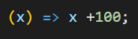
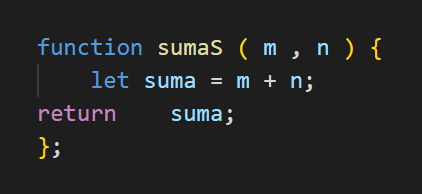

Cómo se estructura una función Flecha
1. La visualizamos como una función tradicional.

2. Ahora, desglosamos esta función:
A. Se elimina la palabra fuction, el identificador y se coloca una flecha (=>) entre el argumento "( x )" y la llave inicial ( { ):

B. Se suprimen las llaves ( { } ) y la palabra "return", pues esta última queda implícita:

C. Si solo se cuenta con un argumento, se eliminan los paréntesis, si se contara con varios se mantendrían:

Función flecha con varias líneas.
Cuando se necesita formular un procedimiento con distintas sentencias, con la función Flecha, se debe expresar dentro de llaves ( { } ) y dejar explícitamente el uso de "return" para indicar que se devolverá un valor.
Función Común

Función Flecha

Calculadora IMC